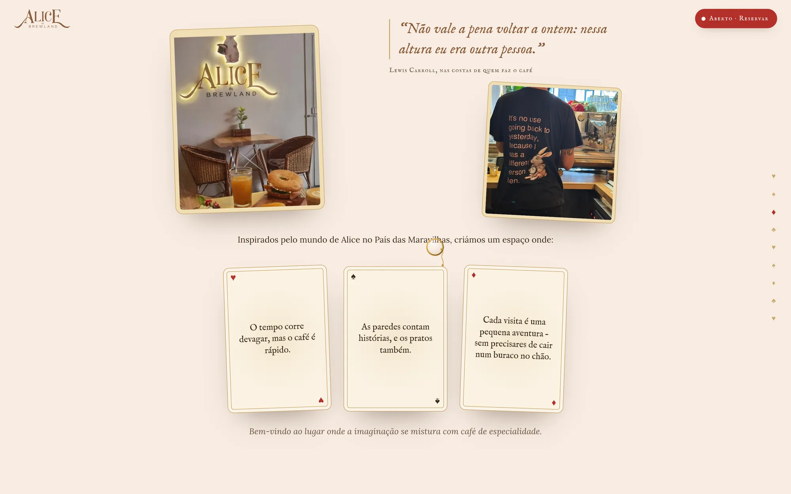
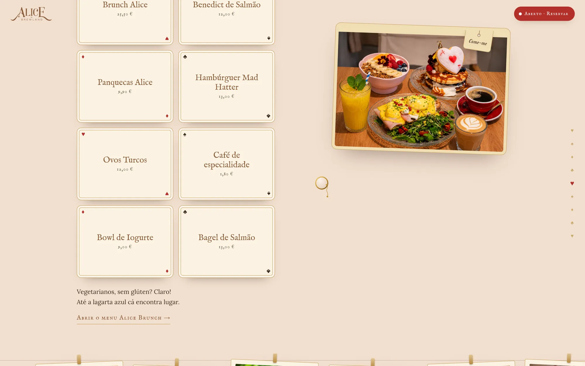
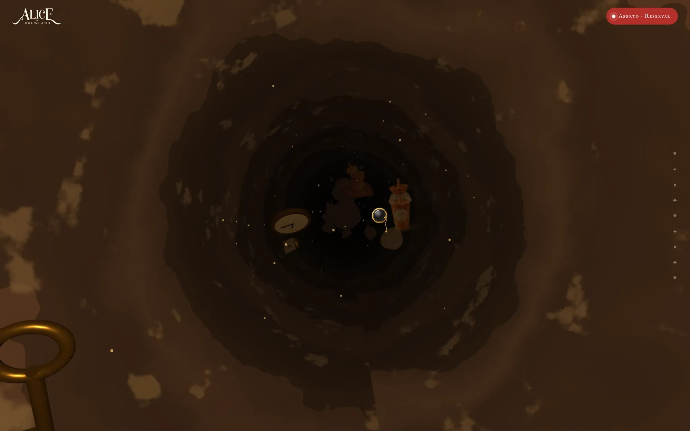
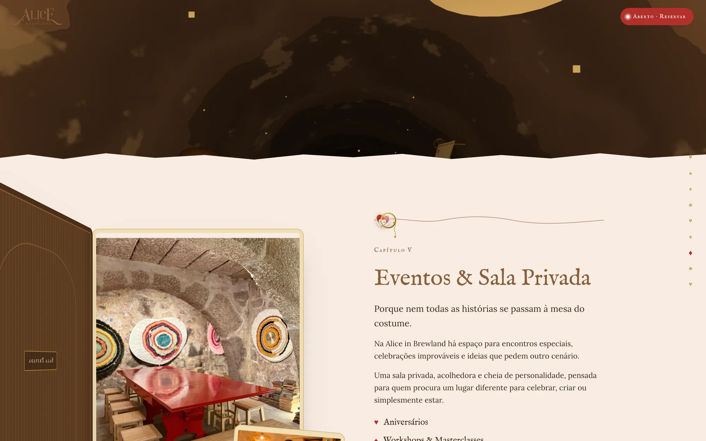
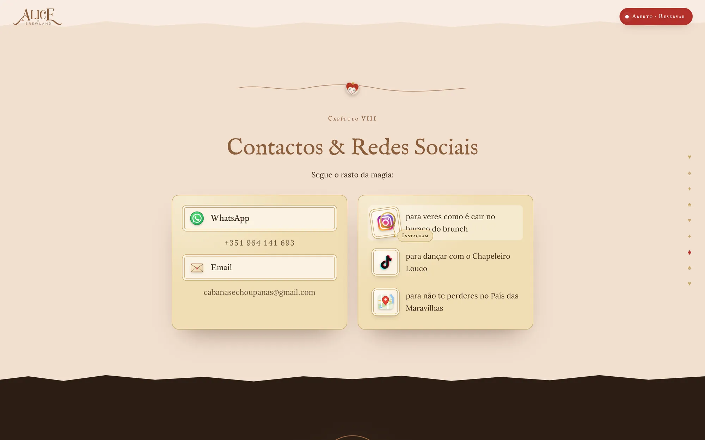
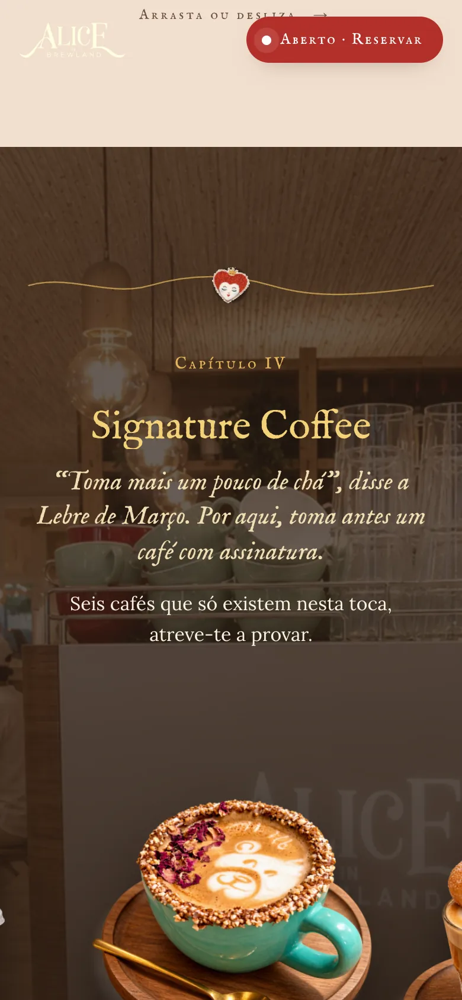

Alice in Brewland
O site não se lê — cai-se nele. Cada secção é um patamar na descida pela toca do coelho, até ao brunch mais mágico do Porto.

Alice não entra no País das Maravilhas: cai. O site faz o mesmo. A página é uma descida vertical pela toca do coelho e cada secção é uma aterragem pelo caminho — a história, a experiência, o menu, os eventos.
Entre elas acontece a própria queda: um túnel em WebGL onde flutuam chávenas, relógios de bolso e chaves.
O mundo visual parte do protótipo em Figma — o Coelho Branco em aguarela, botões de pergaminho, o vermelho da Rainha de Copas, dourados sobre um creme quente. Transformámo-lo num sistema: tipografia de livro de histórias, cartas de jogar como cartões de conteúdo e o menu servido como um baralho.







- VIIIcapítulos numa só descida
- 3Dtúnel em three.js entre capítulos
- 1página, do jardim ao fundo da toca
STAROT